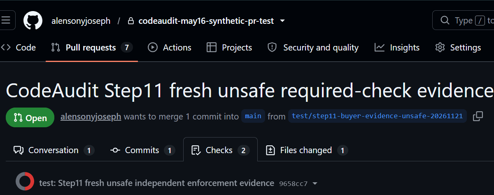

Code is becoming abundant. Evidence must decide what proceeds.
CodeAudit One investigates whether an exact proposed code revision preserves defined obligations, produces reproducible failure evidence when it does not, and separates verified decisions from generated suggestions.
Acquisition thesis: GitLab already finds vulnerabilities and proposes repairs. CodeAudit explores the distinct qualification boundary between a proposed change and permission to merge, directly relevant to the governed software lifecycle.
Executable counterexample
Actual source behaviour reproduced a cross-tenant authorization regression against the reference.
Independently checked repair
A bounded local repair replay passed 9/9 acceptance gates, including required functionality.
Protected merge evidence
The GitHub App's required private-pilot check cleared a qualifying revision and blocked a deliberate defect.
Actual GitHub protected-check outcomes
These are genuine owner-captured GitHub Checks screens from the private TypeScript pilot. The failure conclusion on PR #8 is the intended safety decision, not a product malfunction.
PR #7 · QUALIFYING CHANGE
CodeAudit / Protected: SUCCESS. GitHub CLEAN. The PR remained open.

PR #8 · REGRESSION PREVENTED
CodeAudit / Protected: FAILURE. GitHub BLOCKED. The PR remained open.
What a buyer can establish
The existing results support a finite TypeScript verification pilot and a distinct GitHub integration. They do not establish universal correctness, general-purpose production verification or comparative superiority to GitLab. A historical safe PR #3 was merged, separately from these fresh examples.
Evidence over claims · CodeAudit One · November 202601 / 02
CodeAudit One
Actual GitHub App · Independent repository trial
No shared passwords · No CodeAudit signup
Install. Select a repository. See the result in GitHub.
The hosted App has now completed a real PR screening on a second repository. GitHub received a revision-linked Check Run and a CodeAudit-authored comment, both visible publicly and inspectable at the original URLs.
01
Install the App
Sign in to GitHub. Choose Only select repositories and authorize a disposable test repo.
02
Open a small PR
Create or update a pull request in that repo. GitHub sends the event to CodeAudit.
03
Inspect the outcome
Open the PR's Checks and Conversation tabs for the screening result and bot comment.
Second repository: codeaudit-evidence-demo. Public test PR #1, revision 206b13b. The bot flagged changed authentication and permission behaviour. This is an advisory outcome, not a formal proof.
Scope of this self-service evaluation: New GitHub App installations currently provide advisory screening. They do not run the private trusted proof worker or issue a protected merge authorization. The separately demonstrated protected pass/block results on page one came from the bounded private pilot. Deeper buyer-selected verification requires a scoped technical evaluation.
The GitHub App uses GitHub's own authorization. Choose only a test repository containing code you are comfortable granting the stated read/write check and PR permissions.